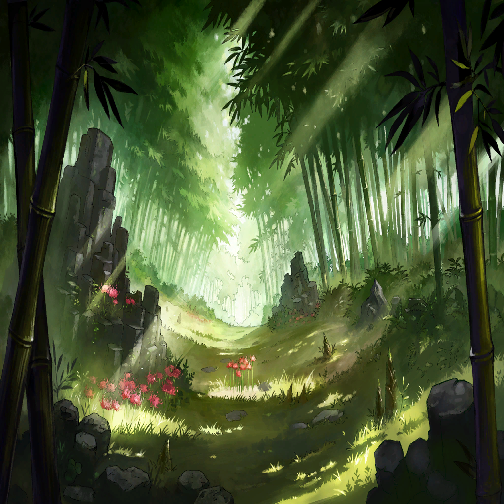

Nimul
Nimul
Nimul
Nimul
Nimul
Nimul
Nimul
Nimul
Nimul
Nimul
Nimul
Nimul

Nimul
Nimul
Nimul
Nimul
Nimul
Nimul
Nimul
Nimul
Nimul
Nimul
Nimul
Nimul
Nimul
Nimul
Nimul
Nimul
Nimul
Nimul
Nimul


Nimul
Nimul
Nimul
Nimul
Nimul
| |
|  | |
| Yna | And with that, the chores are done. |
| Yna | It's almost time for Benika to arrive. |
| Yna | I never expected to be able to spend time with my sister like this again. |
| Yna | There's no happier time for me than this. |
| Yna | But what should I do now? Do I continue walking the same path as I did in the past? |
| Yna | Relive the future where I lose Benika and this region and become the sole survivor once again? |
| Yna | There is a chance I could save my sister. |
| Yna | However... |
| Yna | That would mean betraying all the history that is to come. |
| Yna | All the battles the world has seen up until now; the tomorrow that the people grasped for by enduring pain and suffering. |
| Yna | Do I really intend to take that from them? |
| |
| ??? | Huff...huff... Oh... |
| Yna | Are you all right, Benika?! |
| Benika | I can't...run anymore... Go on...without me, Yna... |
| Yna | Tch! |
| Yna | What should I do? I... I...! |
| Roh Ku | What is troubling you, Yna? |
| Yna | Master! Were you eavesdropping on me?! |
| Roh Ku | No. I was just passing by. Although... |
| Roh Ku | As your teacher, I have one piece of advice for you. |
| Yna | Advice? |
| Roh Ku | You are too kind. Naive, even. |
| Yna | ... |
| Roh Ku | Listen closely, Yna. The moment you concern yourself with the fates of others is the moment you will no longer be able to save them. |
| Roh Ku | Know that no matter how strong you become, there's only so much you can protect. |
| Roh Ku | That is why you must forget. Forget everything except what you want. |
| Roh Ku | Do only what you feel you must do. |
| Roh Ku | And believe that others are doing the same. |
| Yna | But, that is... |
| Roh Ku | That is all I wanted to say. |
| Roh Ku | It is almost time for your sister to arrive. Go out and meet her. |
| Yna | Right... |
| Roh Ku | I must go meet with Lord Kubera. If you are finished with your tasks, you may do as you please. |
| Yna | Thank you, Master. |
| Roh Ku | There is no need to thank me. |
| Yna | Even my strict master is worried about me... I must seem rather desperate. |
| Yna | But I... |
| Yna | What should I do? |
| |
| Benika | U-um...! Good afternoon! |
| Luke | Scrah! Scrah! |
| Yna | Good job getting here, Benika. Master is not here today, so there's no need for you to be so nerv— |
| Yna | Benika, who is that? |
| Benika | Oh, um, I found him passed out in town and... |
| Yna | Nimul?! Why is he here, in this time?! |
| Benika | Oh, is he a friend of yours? That's great! Looks like it was a good idea to bring him here. |
| Yna | That's a serious wound. Sorry, Benika, but could you boil some water? |
| Benika | Y-yeah, of course! |
| Yna | ......... |
Nimul |
......... |
| Yna | Well then, let's treat your wounds first. |
Nimul |
Uh... Here? |
| Yna | So, you're awake, Nimul. |
Nimul |
Eh? Yna! |
| Yna | From how you're acting, it seems you are somehow the very Nimul I know. |
Nimul |
Which means, you must also be... |
| Yna | Yes. the one who practiced techniques with you and went on a journey with you to defeat Cursed Beasts was me. |
Nimul |
I see. I'm relieved! |
Nimul |
But...aren't you a little...young to be my Yna? |
| Yna | I was young in the first place... |
Nimul |
Ow! |
| Yna | This wound... You fought Avaritian soldiers, didn't you? |
Nimul |
Yes, I was careless. The people of this region are strong. |
| Yna | It's a strength obtained by making a great many trade-offs. |
| Yna | Their strength is the natural result of their stripping themselves of weakness. |
| Yna | But more importantly, why are you here? |
Nimul |
Quence's Space-Time Manipulation. We failed at stopping him and were dragged into the ways of time. |
Nimul |
As to what happened after... Sorry, but I'm unsure of what happened. |
| Yna | I...see. |
| Yna | But never mind that now! Listen, Nimul... |
| Yna | This region will be destroyed soon. |
Nimul |
What did you say? |
| Yna | The blade my master Roh Ku smithed, the Dragonslayer... |
| Yna | The battle between Mammon, and Lord Kubera, who obtained that blade, will lead to this region's destruction. |
| Yna | So you must leave here quickly. |
Nimul |
Dragonslayer... |
| |
| Kubera | First, we need weapons. Stronger, tougher blades. |
| Kubera | Start gathering soldiers ready for slaying a dragon. |
| Greedy Soldier A | Yes, sir! |
| Greedy Soldier A | You heard him, soldiers! The time of our end, our final trial, is at hand! |
| |
Nimul |
But they will be doomed if they do that! Kubera found the gear components needed to take down a Cursed Beast! |
| Yna | What? |
Nimul |
We must hurry, Yna. To protect this region...we have to stop Kubera. |
| Yna | Wait, Nimul. |
Nimul |
What is it, Yna? |
| Yna | This is truly a rare opportunity. |
| Yna | There is no other chance to save the Avaritia Belt. |
| Yna | However, that will change the past. It will negate the journey we will take hereafter. |
| Yna | Is that all right with you? If that truly happens, will you truly be at peace with it? |
Nimul |
Yna... |
| Yna | I myself wanting to save my sister... My hometown... |
| Yna | But I am afraid of what might happen. |
| Yna | To fulfill my wish would mean I would have to sacrifice your futures. |
Nimul |
Yna... |
| Yna | ......... |
Nimul |
Still, I will save this region. |
| Yna | Nimul... |
Nimul |
I have made many mistakes. And I will surely make more in the future. |
Nimul |
Life is a continuous chain of choices. One can never know if they made the right choice until it has already been made. |
Nimul |
So, I have decided to do what I think is right at the current moment. |
Nimul |
I've given up on worrying whether this is a path laid out by someone else, or what their intentions might be. |
Nimul |
I want to save all I hold dear. But if I save one person now, and because of that someone else is hurt... |
Nimul |
Then I will save them as well! I will do it! |
Nimul |
This ideal started as a dream between us. |
Nimul |
In Sephira, at that workshop, we talked incessantly about the methodology of saving the world. |
Nimul |
The time to change reality is nigh! |
Nimul |
So let's do it once again. Just the two of us, here and now! |
Nimul |
We will save this region! We'll disrupt the order of the world as it was decided by the gods—and create a new world! |
Nimul |
So, please... Help me, my friend. |
| Yna | Nimul... |
| Yna | All right. |
| ??? | Ahhhhhhh! |
Nimul |
That voice... |
| Yna | Benika?! |
| |
| Kubera | Surely the quality of this gear cannot let me down... |
| Cursed Beast Mammon | Begone, human child. No matter how strong you may be, if your blade is cannot cut my flesh, it is meaningless. |
| Kubera | Damn you... Damn you! |
| Roh Ku | My blade cannot pierce it?! So, this is a Cursed Beast... This is Mammon! |
| Roh Ku | Then we shall need stronger gear. Stronger components will be necessary. |
| Roh Ku | I will forge the kind of gear that I will only make once in my lifetime—gear strong enough to bring down a god. |
| Roh Ku | That day, I gained a purpose worth pouring my all into. |
| Roh Ku | Cursed Beast Mammon, the pinnacle of all life in this region... |
| Roh Ku | That disgrace, that powerlessness... I will never forget it. I could never have foreseen that the work I've trained to perfection would be unable to pierce any living beast. |
| Roh Ku | How many nights have I spent in anticipation of killing that beast? But those nights are soon coming to an end as well. |
| Roh Ku | Just a little longer... |
| Roh Ku | My preparations are complete. I've poured all of my skill and fortitude into my technique. |
| Roh Ku | Now, if only I could obtain the flesh and blood of a dragon... |
| Roh Ku | Who are you?! |
| Benika | S-sorry! I'm looking for my brother... |
| Roh Ku | You are Yna's sister? |
| Benika | I'm Benika. And you must be Master Roh Ku. |
| Roh Ku | He's changing the forge water. Now is not the time to interrupt him. |
| Benika | Oh, yes, thank you. |
| Luke | Skree! |
| Roh Ku | Wait for a moment, Benika. |
| Benika | Y-yes? |
| Roh Ku | That beast... Where did you find it? |
| Benika | Huh? Oh... On this island. |
| Roh Ku | What?! It was right in front of my nose the whole time?! |
| Benika | Master Roh Ku? |
| Roh Ku | Give that to me. We need the flesh and blood of that dragon. |
| Benika | Huh? Oh. |
| Luke | Skree skree! |
| Roh Ku | It is no mistake. It may be young, but this magil... It is, without a doubt, a dragon! |
| Benika | Master Roh Ku, please stop! It didn't do anything wrong! |
| Roh Ku | Life itself is not a sin, of course. Sin is something we humans must bear. |
| Roh Ku | Hate my mercilessness and your weakness, my child. |
| Roh Ku | That feeling is what will make you stronger. |
| Benika | Stop it! |
| Roh Ku | Perhaps I am growing senile. It was my fault for leaving an opening while we were conversing. |
| Roh Ku | You saw it, too, Lord Kubera? |
| Kubera | Of course. |
| Kubera | Are you certain that small beast is a dragon? |
| Roh Ku | Indeed. If we obtain its flesh and blood, my work will be completed. |
| Roh Ku | Gear powerful enough to cleave even sin. It must be completed. |
| Kubera | Then there is only one thing I must do. |
| Kubera | Follow that girl. |
| Greedy Soldiers | Yes, sir! |
| |
| Benika | Haaa...haaa... |
| Benika | Ah... Ungh... |
| Benika | Ah...eeek! |
| Yna | It's me, Benika. What's the matter? |
| Benika | B-brother...? |
Nimul |
Yna, who is this child? |
| Yna | She's my sister. Her body has always been frail. |
| Luke | Skragh... |
| Yna | It's thanks to her carrying you that helped us reunite. |
Nimul |
Is that so? |
Nimul |
Then I must repay my debt to her. |
| Yna | Nimul? |
Nimul |
They're coming, Yna. We're surrounded. |
| Yna | Huh?! |
| Greedy Soldier | Weaponsmith Yna, and you, foreigner from another land... |
| Greedy Soldier | We have been commanded to take that infant dragon. Hand it over quietly. |
| Yna | And if we do not? |
| Greedy Soldier | Of course we will take it by force, for that is the only law we follow. |
| Yna | Nimul, lend me your strength. |
Nimul |
Of course. |
| Greedy Soldier | I see. That's just what we wanted to hear. |
| Greedy Soldier | Allowing something to be seized by force, without even a struggle, just isn't our way! |
| Greedy Soldier | If we cannot compromise, we fight! |